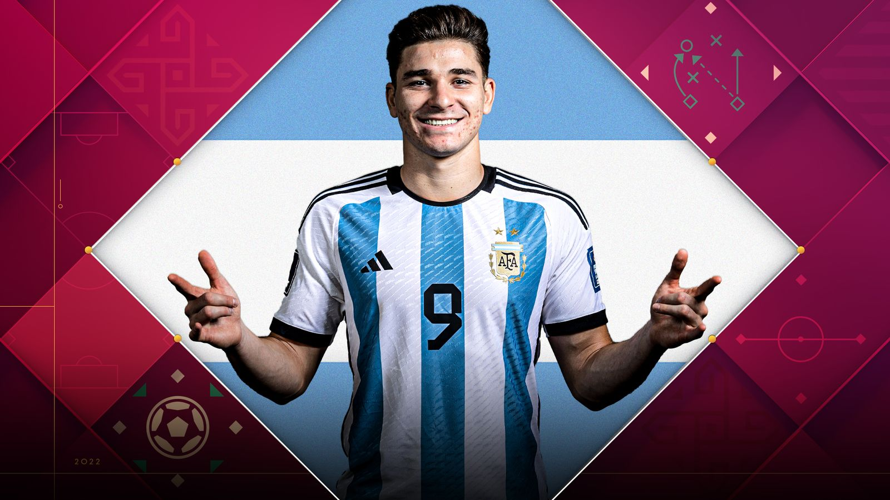

Desafios
França elimina Argentina do futebol masculino olímpico com gol de filho de congolês. Em meio à polêmica dos cânticos racistas da Seleção Argentina contra franceses, a França venceu por 1 a 0 e eliminou a Argentina do futebol masculino nos Jogos Olímpicos de Paris 2024
- - Grupo B: Argentina 1 x 2 Marrocos (Jogo 3)
- - Grupo B: Argentina 3 x 1 Iraque (Jogo 11)
- - Grupo B: Ucrânia 0 x 2 Argentina (Jogo 19)
- - Jogo 25: França (1A) 1 x 0 Argentina (2B)
